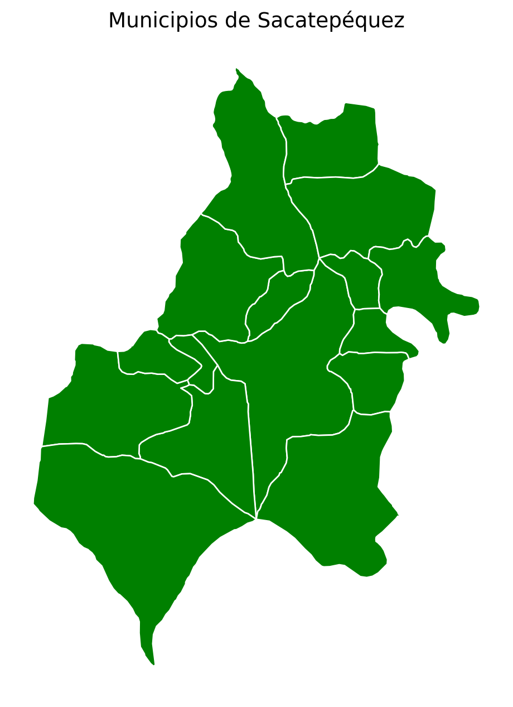
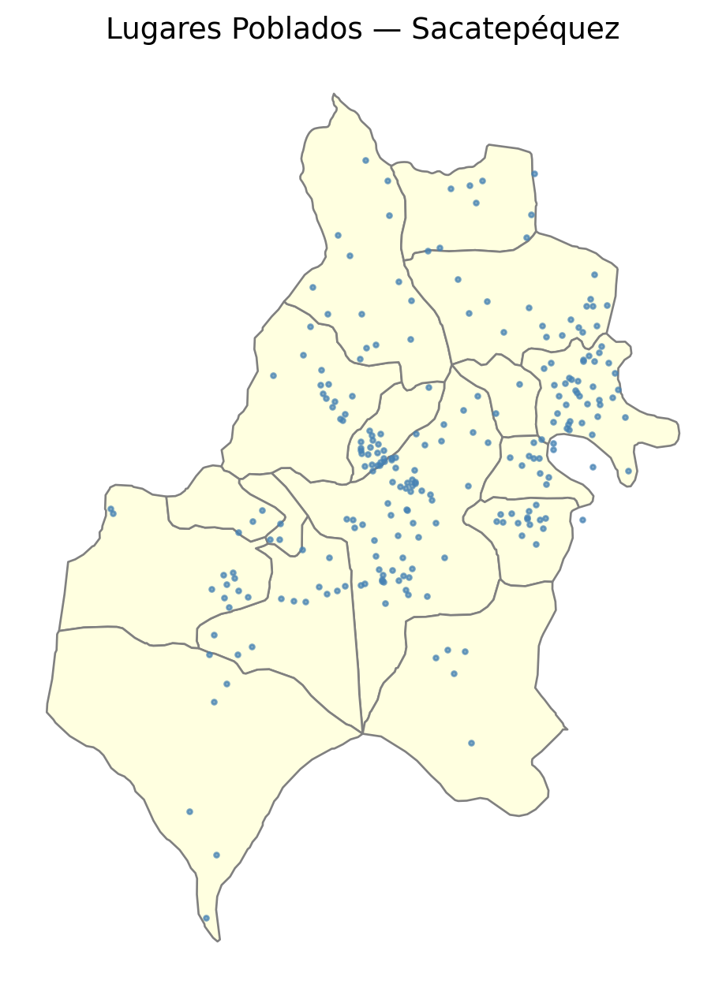

library(geoquetzal)library(ggplot2)ggplot() +geom_sf(data =departamentos(), fill ="lightyellow", color ="gray") +geom_sf(data =lagos(), fill ="lightblue", color ="steelblue") +theme_void()
library(geoquetzal)library(ggplot2)ggplot() +geom_sf(data =municipios(), fill ="lightyellow", color ="gray", linewidth =0.4) +geom_sf(data =lagos(), fill ="lightblue", color ="steelblue") +theme_void()
import geoquetzal as gqmunis = gq.municipios("Sacatepequez")ax = munis.plot(color="green", edgecolor="white", figsize=(8, 8))ax.set_title("Municipios de Sacatepéquez", fontsize=14)ax.set_axis_off()

library(geoquetzal)library(ggplot2)ggplot() +geom_sf(data =municipios("Sacatepequez"), fill ="green", color ="white") +ggtitle("Municipios de Sacatepéquez") +theme_void()
import geoquetzal as gq# Load with point geometrygdf = gq.lugares_poblados(departamento="Sacatepequez", geometry=True)# Overlay on municipality boundariesax = gq.municipios("Sacatepequez").plot( color="lightyellow", edgecolor="gray", figsize=(8, 8))gdf.plot(ax=ax, color="steelblue", markersize=5, alpha=0.7)ax.set_title("Lugares Poblados — Sacatepéquez", fontsize=14)ax.set_axis_off()
ℹ 22 lugares poblados excluidos por coordenadas nulas (códigos terminados en 999 — asentamientos sin nombre oficial).

library(geoquetzal)library(sf)library(ggplot2)# Load and convert to sf points (centroids)lp <-lugares_poblados(departamento ="Sacatepequez")lp_valid <- lp[!is.na(lp$longitud) &!is.na(lp$lat), ]lp_sf <- sf::st_as_sf(lp_valid, coords =c("longitud", "lat"), crs =4326)# Overlay on municipality boundariesggplot() +geom_sf(data =municipios("Sacatepequez"), fill ="lightyellow", color ="gray") +geom_sf(data = lp_sf, color ="steelblue", size =1, alpha =0.7) +ggtitle("Lugares Poblados — Sacatepéquez") +theme_void()
Voronoi polygons for lugares poblados
Since INE does not publish official lugar poblado boundaries, GeoQuetzal generates Voronoi tessellation approximations clipped to municipio boundaries.
Lugares poblados with NULL coordinates (codes ending in 999) are automatically excluded from the Voronoi. These are informal settlements without an official location.